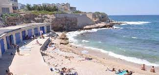
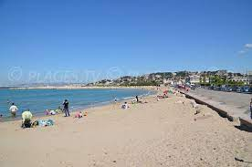
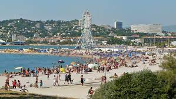
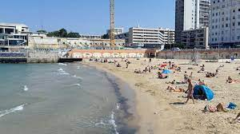
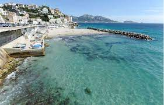
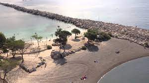

Plage le Bain des Dames 36 Prom. du Grand Large, 13008 Marseille Petite plage de galets et de gravier, avec quelques cabanons et un restaurant et des toilettes publiques, dans le quartier de la Madrague de Montredon. Direction Pointe Rouge/Goudes. Parking public
Plage de l'Huveaune 111 Av. Pierre Mendès France, 13008 Marseille La plage de l'Huveaune, plus connue à Marseille sous le nom d'Epluchures Beach, se situe, comme beaucoup de plages, en plein coeur de la ville, tout près de la fameuse reproduction de la statue de David. C'est la seule plage de sable qui subsiste de l'ancienne configuration du littoral, avant la création des plages du Prado, de l'Escale Borely et de la Vieille Chapelle. Elle doit son nom au petit fleuve qui se jette juste à coté, l'Huveaune. L'été, les familles l'envahissent car, au-delà d'être surveillée, les enfants ont pied assez loin du bord. Un parking payant en facilite également l'accès. Du du 15 juin au 30 août est installé un poste de secours aux normes et équipés d'un point d'accueil du public, d'un lieu de vie pour les agents, d'une salle de soins et d'isolement, de sanitaires et une douche pour les agents. Métro Castellane ou Rond Point du Prado + bus 19. Parking public
Plages du Prado 199 Av. Pierre Mendès France, 13008 Marseille C’est la plus grande plage de Marseille, avec une succession de plusieurs plages en libre accès (Roucas Blanc, Prado Nord, Prado Sud, Plage de Borély, Vieille Chapelle, Huveaune…) durant 3,5km. Elle est l’une des plus fréquentées de Marseille, et s’étire du David, célèbre statue du Prado, jusqu’à la plage de la Vieille Chapelle proche de la Pointe Rouge. Elle dispose également d’un complexe avec restaurants, bars et boutiques : l’Escale Borély. Tous les étés, elle accueille également plusieurs festivals, le Delta Festival ou encore la Freestyle Cup, grâce à son skate-park.
Plage des catalans 1 rue des Catalans Plage idéale pour les familles En contrebas de la Corniche Kennedy, la Plage du Prophète est une plage, en libre accès, iconique de Marseille. Elle est très célèbre auprès des marseillais mais également des touristes car elle convient aux petits et aux grands ! L’eau y est peu profonde, les enfants ont donc pied assez loin, et pour les plus sportifs, un terrain de beach-volley est en libre accès ! La Plage du Prophète possède également un poste de secours, une buvette et des douches. Et pour un repas avec vue mer, c’est Chez Marco, célèbre institution située juste au-dessus de la plage qu’il faut se rendre.
Plage du prophète CORNICHE KENNEDY, 13007 Marseille La plage du Prophète est une petite plage sableuse, aux eaux peu profondes, équipée d'une buvette, de poubelles, de jeux pour enfants, d'un terrain de volley, poste de secours, sanitaires, douches. L'équipe de surveillance est en place du 15 juin au 30 août de 9h30 à 19h. Accès avec le bus 83 (Vieux Port). Parking public
Plage de la Lave Quai de la Lave, 13016 Marseille Contrairement à son appellation, le littoral de la route de la Plage ou de l’Estaque-Plage n’est plus constitué d’une plage ; le bord de mer est aujourd’hui occupé par des ports de plaisance clôturés, des jetées bétonnées, et l’ancien petit port de pêche de l’Estaque. Les plages du Fortin et de la Lave (5 200 m2) ont été récemment aménagées à la sortie de l’Estaque, construites sur la mer avec des enrochements artificiels et un môle bétonné, sous la falaise de la route de Martigues, au lieu-dit des Corbières.
